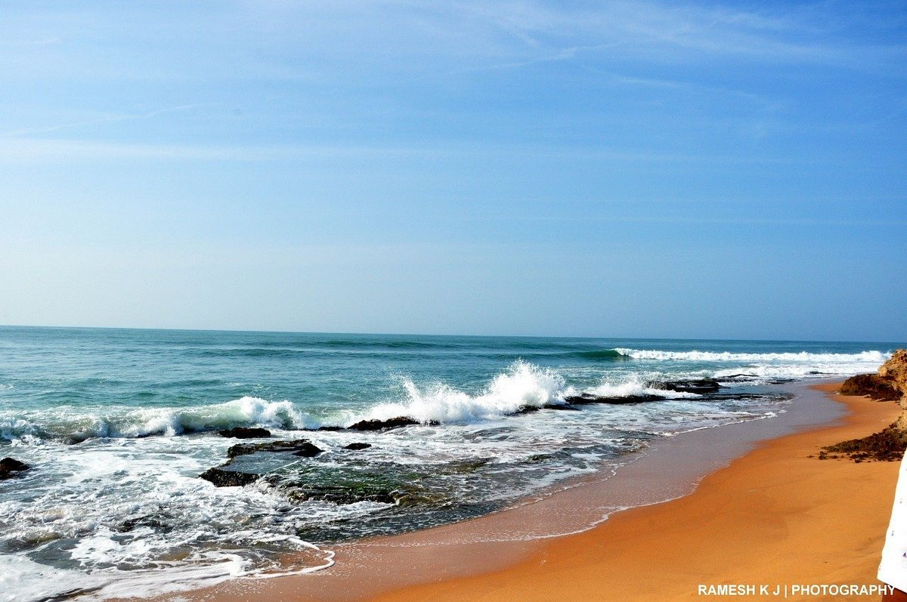

Explore one of the major seaports in India, Tuticorin Port. You can witness the hustle and bustle of maritime activities and enjoy the scenic views of ships coming and going.


Explore one of the major seaports in India, Tuticorin Port. You can witness the hustle and bustle of maritime activities and enjoy the scenic views of ships coming and going. other details |

Located about 40 kilometers from Tuticorin, Thiruchendur Murugan Temple is an ancient Hindu temple dedicated to Lord Murugan. It's situated on the shores of the Bay of Bengal and is one of the six abodes of Lord Murugan. other details |
|
Spend some relaxing time at Tuticorin Beach, also known as Roche Park Beach. It's an ideal spot for leisurely walks, picnics, and watching mesmerizing sunsets. other details |

Take a guided tour of the Tuticorin Thermal Power Station to learn about electricity generation processes. It offers an educational experience for those interested in power plants and energy production. other details |

Explore the biodiversity of the region by visiting Kalakkad Wildlife Sanctuary, located near Tuticorin. It's home to various species of flora and fauna, including elephants, tigers, and birds. other details |

Enjoy a serene escape at Rajaji Park, a well-maintained green space in Tuticorin. It's an excellent place for morning walks, jogging, and relaxation amidst nature. other details |

Embark on a boat trip to Gulf of Mannar Marine National Park, a UNESCO World Biosphere Reserve known for its coral reefs, diverse marine life, and picturesque islands. other details |

Visit the coastal village of Manapad, known for its beautiful beach and the ancient Holy Cross Church. It's a peaceful destination to unwind and enjoy the scenic beauty of the coastline. other details |

Visit the Our Lady of Snows Basilica, a historic church built during the Portuguese era. It's an architectural marvel and an important pilgrimage site for Catholics. other details |